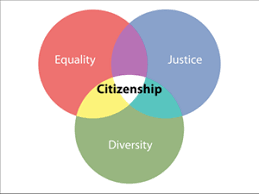

Welcome to my page
I believe that honesty, compassion, respect, responsibility, and courage are key components to citizenship because you must tell the truth whene it needs to be told, you must have compation to help people in need, you must respect evryone in your comunety, it is your responsebilety to help the comunety whene it needs it, and you must have the curege to stand up to people.
One other thing that makes a good citizen is knolige because you must know what is going on in the comunity and acted on it if you can or tell others about it.
An act of citizenship I have